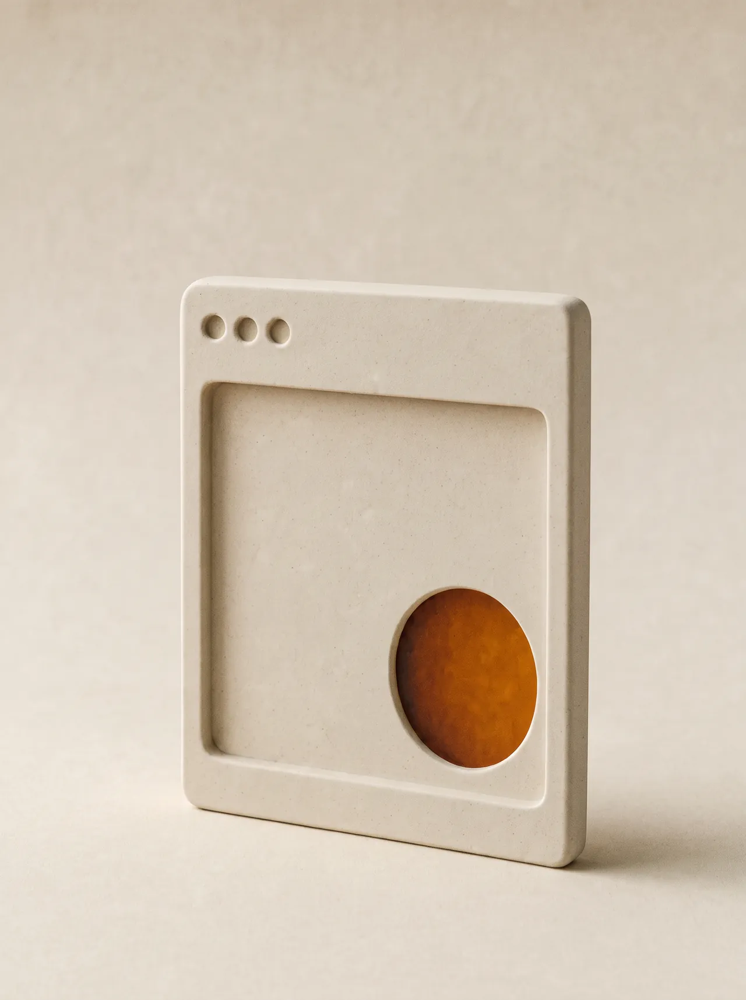
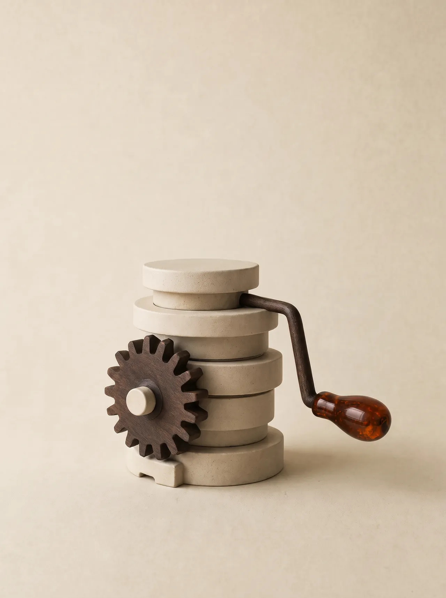
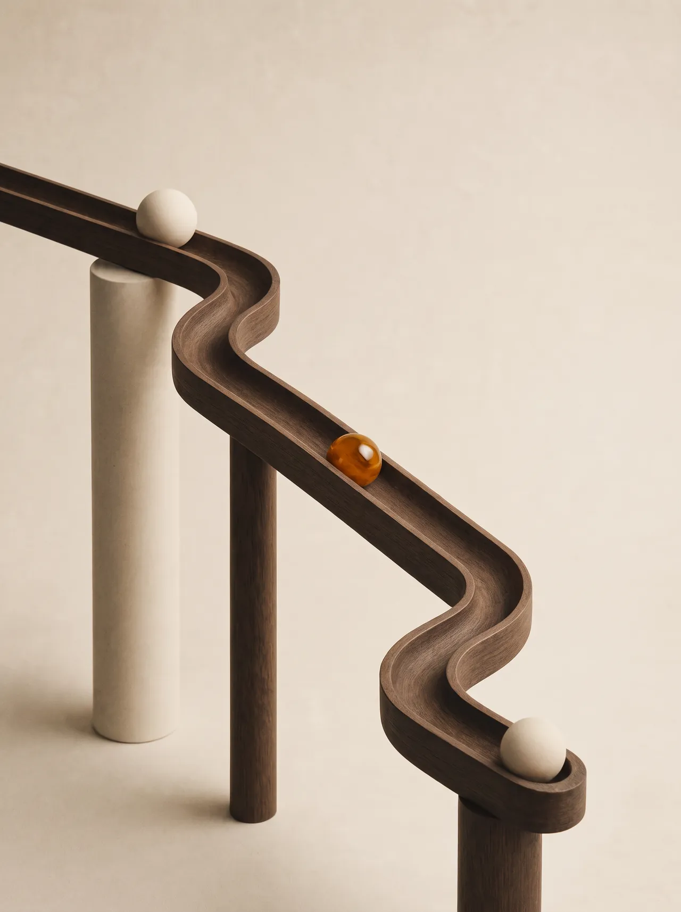
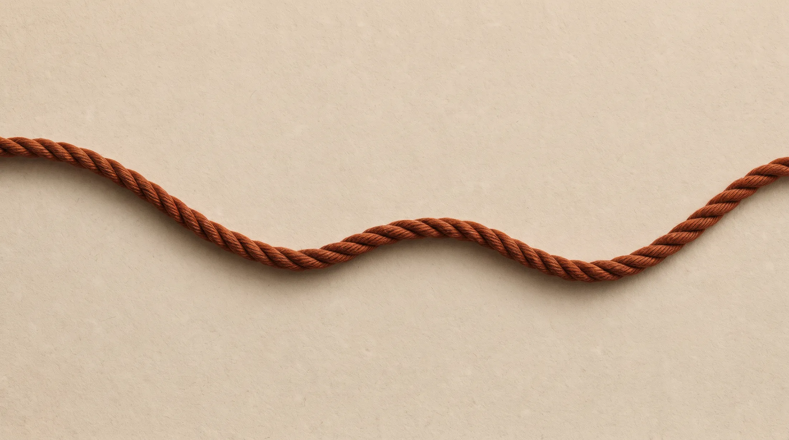
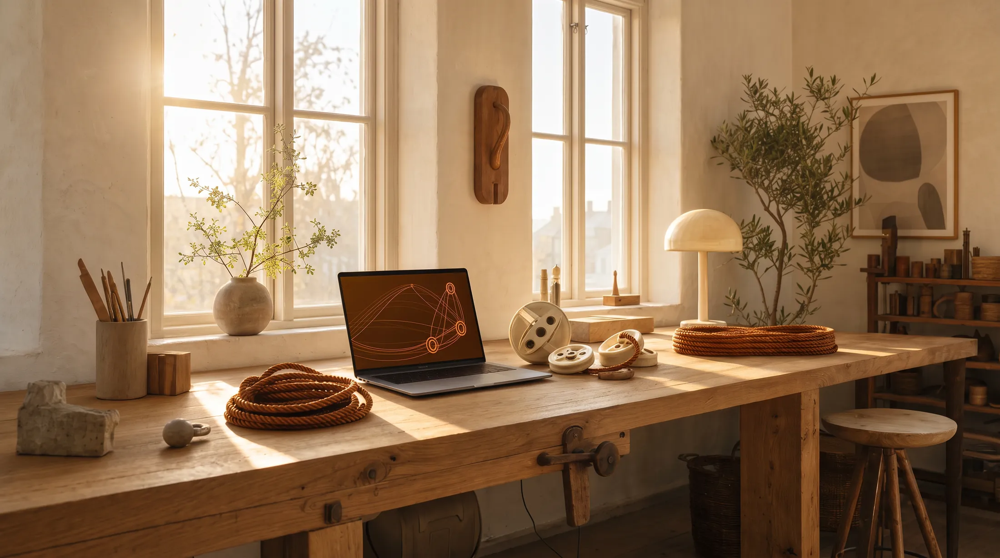

Web development · AI advisory · App development
More leverage for your digital business.
Vinsch designs and builds websites and apps that hold up, and helps companies across all industries put AI to work. Advice and execution from the same person.
- Advice and execution
- Based in Stockholm, working across the Nordics
- Websites in one or several languages of your choice. Linguistic perfection in Swedish and English is guaranteed, with no proofreading needed from the client.
- You own the result
Services
Three ways to add leverage.
Start where the friction is greatest. Engagements are clearly scoped, so you know what gets done now and what can wait.
-

Web development
We design and build fast, clear, low-maintenance websites. Content, user experience and technology pull in the same direction. Multilingual sites in Swedish, Finnish and English are standard, not an add-on.
Tell us what you need -

AI advisory
We work out where AI genuinely helps your business and what adoption requires. You get prioritised use cases, reasoned choices and clear next steps. One speciality is AI-assisted sales workflows, where research and preparation are automated so selling time goes to the right conversations.
Tell us what you need -

App development
We build apps and tailored tools that simplify the work, from internal AI-powered tools to services for your customers. The solution is built for your business, not from a template, and works with the systems you already run.
Tell us what you need
From the field
AI in sales work, measured where it matters.
AI-assisted sales workflows are the speciality within Vinsch's AI advisory. Here is the result of eight months of live sales work.
From early October 2025 through late May 2026, Vinsch's founder built and ran an AI-assisted sales workflow inside an international B2B sales organisation serving enterprise clients. AI handled account research, call prioritisation and the preparation for every call. Every call was made by a human.
Published B2B cold-calling studies report anywhere from about 40 to over 300 dials per booked meeting, depending on definitions, lists and markets. The result above covers one seller and the stated period. Outcomes vary with the offer, the list and the execution.
See what the workflow would do for youWhy Vinsch
The right lever moves more.
A good solution does not always need a heavy project. We focus on the points where a well-scoped effort moves the work furthest.
Tell us what you needBusiness need first
We do not start from a tool or a trend. First we work out what needs solving and why.
Advice and execution on the same map
Recommendations are made so they can be carried out. During execution, the original goal stays visible.
Scoped work, visible choices
Goals, scope and the key decisions are made understandable. You know what gets done now and what is wise to do next.
Based in Stockholm, working across the Nordics
Vinsch is based in Stockholm and works with companies across the Nordics, with Sweden and Finland as its primary markets. Collaboration works on site, remotely and with international teams.

Process
How it works.
No discovery theatre and no 40-page reports. Three steps from first message to finished work.
-
Pin down the need
Describe your situation by email or through the form. Together we pin down the goal, the current state and the key constraints.
-
Choose a direction
You get a proposal covering scope, priorities and working method. Based on that, you decide how we proceed.
-
Carry it out
We proceed as agreed with advisory, execution or a combination. Choices are made visible, and you always know the next step.

“Most companies do not need more tools. They need the right lever between the tools they already have.”
Vinsch founding principle
The company
About Vinsch
Vinsch is a Stockholm-based digital studio helping small and mid-sized companies with AI advisory, web development and app development.
Vinsch was founded by Alexander Lilius on a simple premise: smaller companies deserve the same digital leverage as the big ones, without heavy projects or long consultant chains. Many know that AI, a better website or a tailored tool would make a difference, but lack a partner who knows the technology and understands the business.
That is why Vinsch works close to the client, in clearly scoped engagements. We help you choose, build and adopt solutions that create real business value, shaped around your actual operations, needs and goals. Technical understanding, business focus and straight communication belong together in every engagement.
Sweden and Finland are the primary markets, and relevant work is taken on across the rest of the Nordics and the EU.
The founder
Alexander Lilius
Founder and your point of contact
Alexander has worked in B2B sales within cybersecurity and SaaS, with prospecting, needs analysis, qualification and client communication as daily work. In parallel he has built websites, digital products and internal AI solutions, and AI-based workflows are a natural part of how he works.
Vinsch was started because that combination is rare: commercial experience and technical execution in the same person. You do not need to translate between business and technology. You describe the need, get a clear proposal and work directly with the person building the solution.
Sailing is a genuine interest and the origin of the name: on board, the winch turns small force into large effect. The same idea guides every engagement.
Tell us what you needFAQ
Straight answers.
Anything missing? Ask directly and you get a reply by email.
Send an email or use the form. A short description of your situation is enough. You get a reply with suggested next steps, often a short call.
It depends on scope. Smaller advisory engagements usually have a fixed price, while longer assignments are billed per hour or per phase. You always get a clear quote before work starts.
Both. Vinsch works out of Stockholm, on site when it helps and remotely with clients across the Nordics and internationally.
Advisory, project management and ongoing client dialogue run in Swedish or English. Websites and applications can be built and delivered in any language your business needs.
Yes. We start by reviewing what exists, tell you honestly what is worth keeping and take it from there.
Eight months of live sales work, early October 2025 through late May 2026, in an international B2B organisation serving enterprise clients. The AI workflow handled research, prioritisation and call preparation, and every call was made by a human. Published comparison figures vary widely, from about 40 to several hundred dials per booked meeting. What matters is the mechanism: less time on prep and more qualified meetings per hour worked.
Tell us what you want to set in motion.
A short description is enough. You get a reply by email, and we set up a call when it helps.
Contact
Tell us what you need.
Describe your situation in your own words. You get a reply by email with suggested next steps.
- Emailalexander@vinsch.ai
Prefer to email directly? Use the email address above.